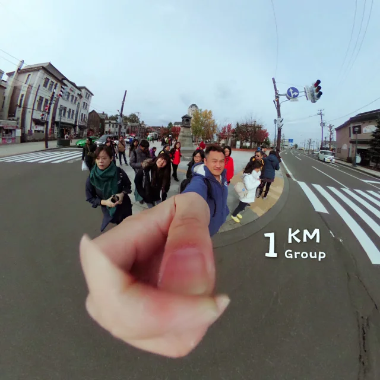
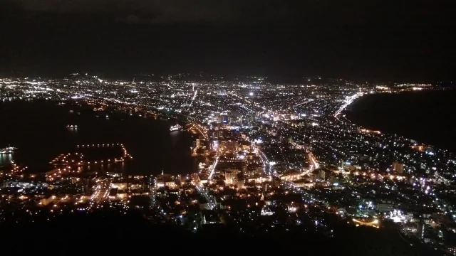
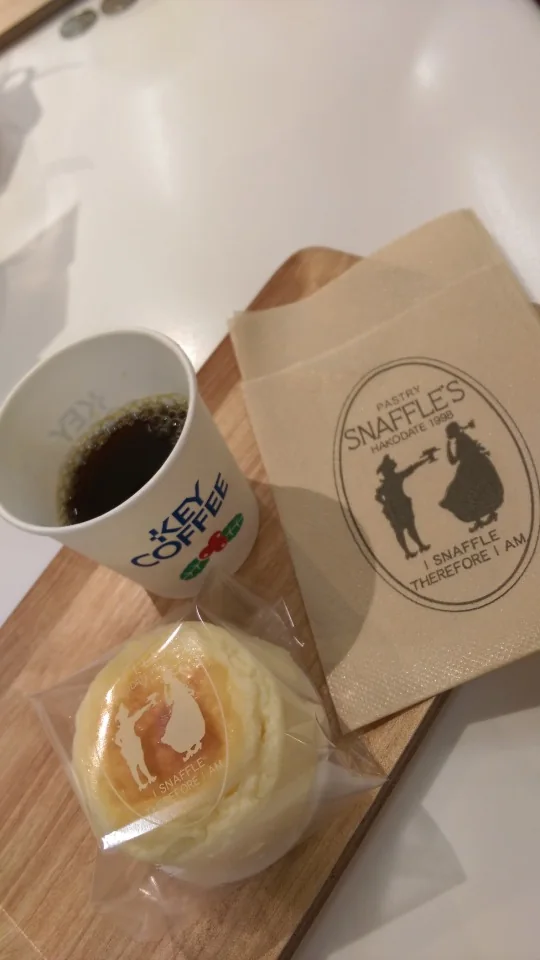
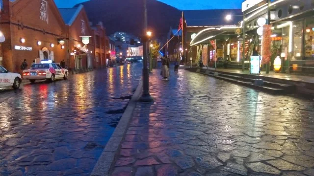
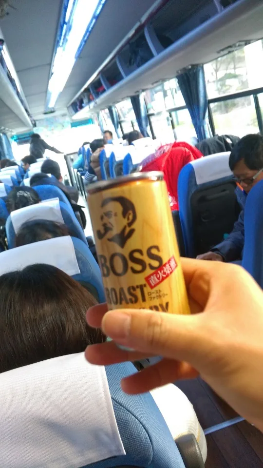
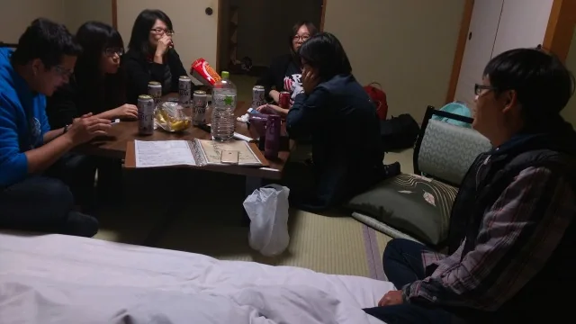
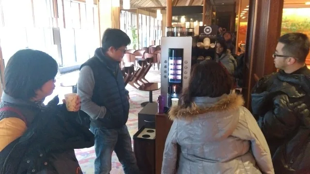
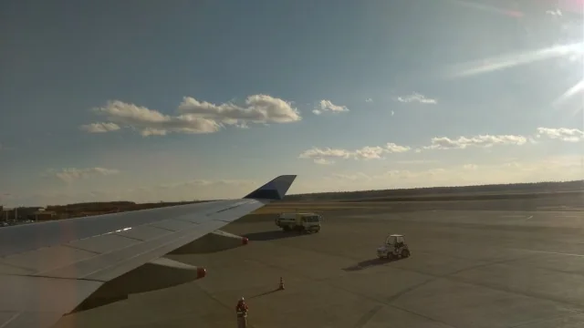

二訪北國的熱鬧補考（下）：大沼零進展、定山溪初雪大谷夜與狸小路爆買
二訪北國的熱鬧補考（下）：大沼零進展、定山溪初雪大谷夜與狸小路爆買

2026/10 更新（原旅程時間：2016 年 10 月下旬）
🧭 2016 北海道員旅系列導覽：
▸ 👈 【上篇】道南篇：支笏湖、登別地獄谷與函館百萬夜景補考（Day 1–2）
▸ 【下篇】道央篇：大沼零進展、定山溪初雪大谷夜與狸小路爆買（Day 3–5） （本篇）





告別了函館湯之川的夜景與酒聚，這趟員旅在第三天正式拔營北上，往道央山區與都會展開下半場。比起 2014 年初訪時一個人在寒風裡沉思職涯，這回身邊多了大夥的笑鬧、熱血的大谷翔平日本一轉播，以及狸小路買到行李箱爬上座位的震撼場面。

Day 3：函館朝市、五稜郭、大沼公園的「零進展視角」，與定山溪的大谷翔平之夜
好快的來到第三天！一早的函館朝市沒有兩年前的雨勢，迎接我們的是超甜的哈密瓜、葡萄、現刨魷魚絲，還有自動販賣機的 BOSS 咖啡。接著轉往五稜郭公園，是個大好日頭的藍天（Blue Sky）。在五稜郭一面爬坡拉腳筋，一面欣賞壯闊的五星城堞與環景區風光。
下一站來到大沼國定公園。空氣裡透著寒意，買了串冰涼清甜的香檳葡萄，走到湖邊按下快門的瞬間，自己都忍不住笑了出來：「相隔兩年拍照完全沒有進展，視角應該一模一樣」！
早上天氣還超好，沒想到遊覽車一路向北，開始上演「氣溫溜滑梯」。途中穿過長長的隧道時，大家還在開那年最紅電影的玩笑，戲稱這是一場「隧道之旅・Train to Busan 屍速列車」（外加沿途看到的小纜車）。


傍晚抵達定山溪，住進的竟然又是跟 2014 年一模一樣的「定山溪溫泉 鹿之湯（ホテル鹿の湯）」！一進房是超霸氣的「2 人睡 4 床的概念」。先在房裡充飢 ing，吃飽喝咖啡時忍不住吐槽「為什麼咖啡機的咖啡永遠都裝不滿」。晃過館內兩年前喝酒的地方，外頭在下雪前的一刻（before snowing awhile）後，真的飄起了細碎的定山溪毛毛雪。
最熱血的是當晚電視正現場直播「2016 日本一」總冠軍賽！兩年前來北海道時滿街都是陽岱鋼，兩年後則是一邊舉杯讚嘆酒好喝，一邊看著螢幕裡的「大谷翔平又安打」！看完球還不忘去定山溪的居酒屋續攤，徹底貫徹「中量多餐，出國一定要宵夜」（宵夜場）的最高原則。
📌 2016 日本一總冠軍賽（北海道日本火腿鬥士 vs. 廣島東洋鯉魚）：2016 年 10 月下旬正逢日本職棒總冠軍賽，也是大谷翔平赴美挑戰大聯盟前，以「投打二刀流」帶領日本火腿奪下日本一的傳奇賽季（當年陽岱鋼亦在陣中）。10 月 27 日於札幌巨蛋舉行的第五戰，大谷翔平擔任第三棒指定打擊敲出安打，九局下更由西川遙輝轟出戲劇性的再見滿貫全壘打，讓全北海道溫泉鄉與居酒屋陷入瘋狂。
📎 Day 3 定山溪與旅途隨手拍影像串連存檔： [01] · [02] · [03] · [04] · [05] · [06] · [07] · [08] · [09] · [10] · [11] · [12] · [13] · [14] · [15]
Day 4：小樽晴空、狸小路買到行李箱爬上座位，與札幌「二嫂的店」之夜
繼第一次天黑下雪之後，倒數第二天迎來風光明媚的好天氣（倒數第二天）。不過北國乾燥的空氣也讓人每天開車門、碰金屬都在啪啪作響，完全是一場「徐巴客開賣・靜電人生」。
早上進到小樽，先在小樽港來罐搞笑的「鼻口養樂多」，再來經典的銀之鐘咖啡館（紅茶店）喝茶拿杯子、逛北一硝子館。站在小樽運河畔，這回大家眼裡閃著光芒，完全是「準備開始買之前哨」。
下午殺回札幌狸小路，徹底推翻了我兩年前說這裡「地廣人稀」的印象。全團同事火力全開，「看得出蓄積 4 天的買物力」，人手大包小包，完全是「買到行李箱爬上座位的意念」！晚餐則拉去吃傳說的燒肉吃到飽：焼肉ダイナーハウス FAM（ファム）白石店（FAM 燒肉／燒肉市場）。
第四晚入住札幌的 Resol Hotel（被我們戲稱為「二嫂的店」），Check-in 時還鬧了一場小小的「房卡風波」。深夜的札幌街頭畫面極其豐富：2016 年正逢《Pokémon GO》剛推出不久，街上到處是抓寶的低頭族們、路邊被撞飛的可樂、薄野街頭攬客的兔女郎，我們也在札幌街頭抓到了 Pikachu 皮卡丘！回「二嫂的店」前，買了喜歡的菊水（沒有橘瓶的），還飛快去松屋來了一下（松屋），把札幌的夜晚塞得滿滿當當。
Day 5：千歲 Rera Outlet、新千歲機場超速打包與回台後的「上週的金罵」
最後一天往機場方向移動，先在千歲 Outlet Mall Rera（レラ）做最後衝刺。拎著「冬天裡的一小咖（初訪韓國 style）」，實踐「喝了胖、然後再買瘦」的購物哲學，還拍下了逗趣的 happypig shoutingpig。
進到新千歲機場，大夥立刻在「超速打包區」把戰利品塞進行李箱。入關前逛了機場裡的「哆啦A夢空中樂園（ドラえもん わくわくスカイパーク）」，進到國際線候機室還有免費軟性飲料（Free Soft Drinks Here），經過免稅店時看著清酒櫃，心裡還是惦記著「找機會再來喝男山」。
回台灣之後的整個禮拜，看著手機相簿裡的照片，腦海裡不斷冒出「上週的金罵（台語：上週的現在）」（Hokkaido 上週的金罵）人在哪裡的收假後遺症。更逗的是，原本以為去日本北海道會先買到的海賊王公仔周邊，最後居然是在台灣的「阿妹民宿」先入手了。
📎 Day 4–5 與返台整理隨手拍影像串連存檔： [16] · [17] · [18] · [19] · [20] · [21] · [22]
👈 回顧前篇：【上篇】支笏湖、登別地獄谷與函館百萬夜景補考（Day 1–2）
